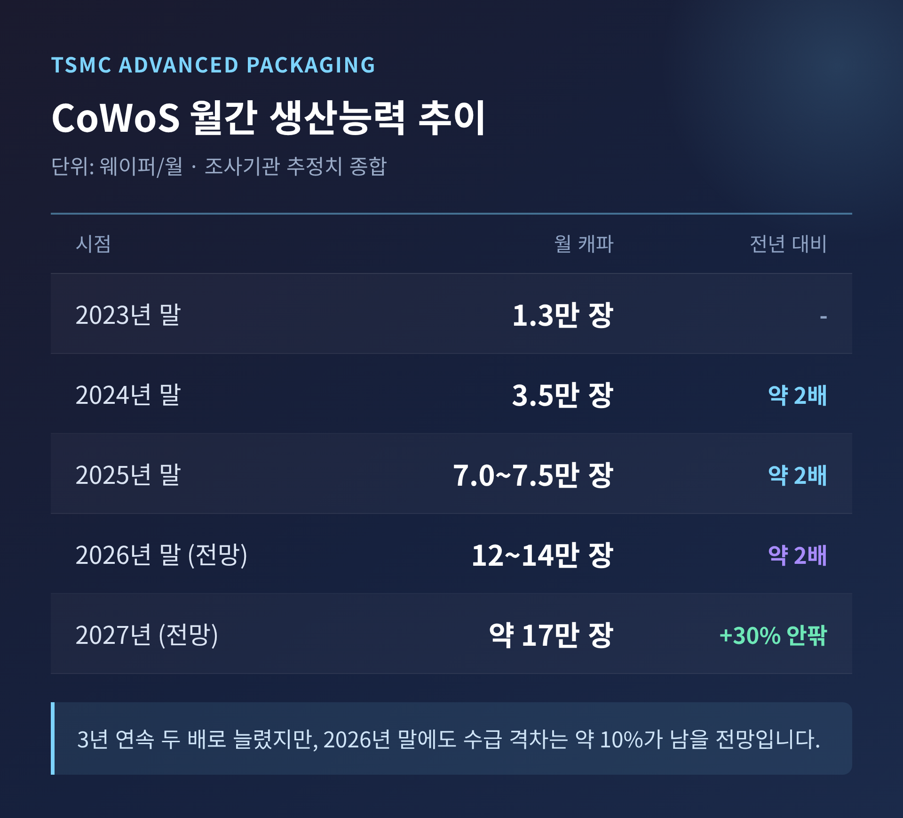
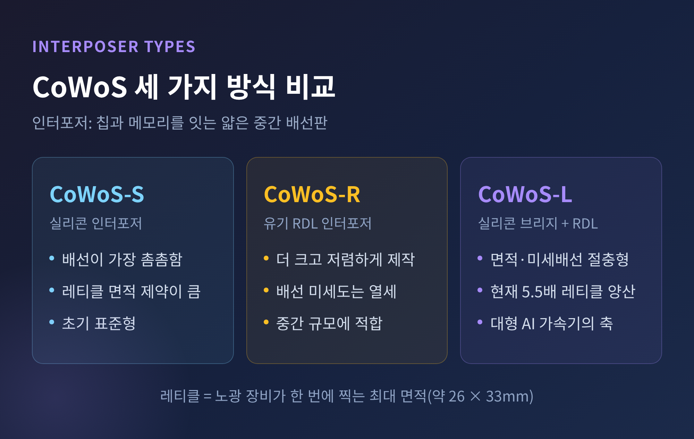
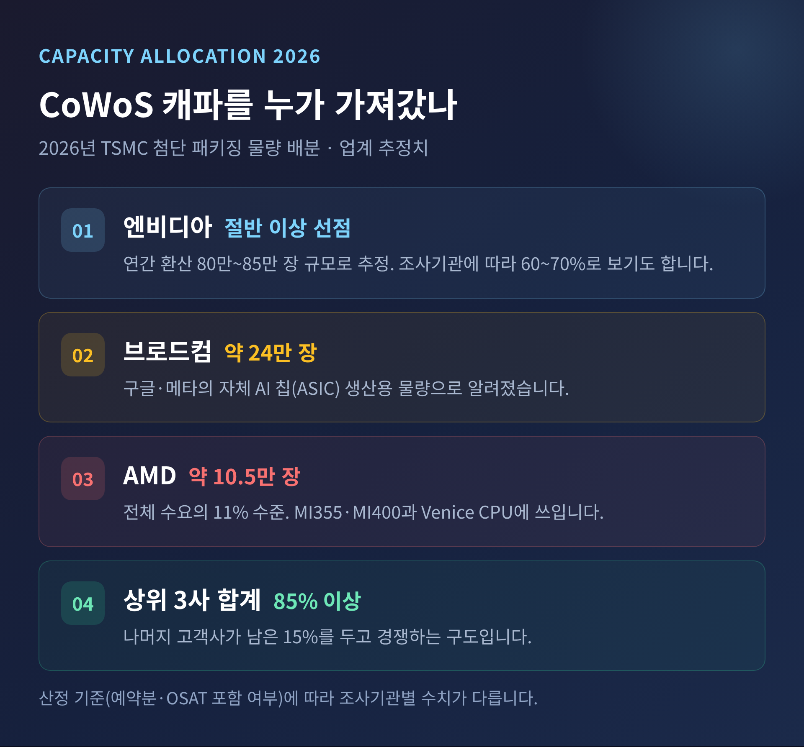
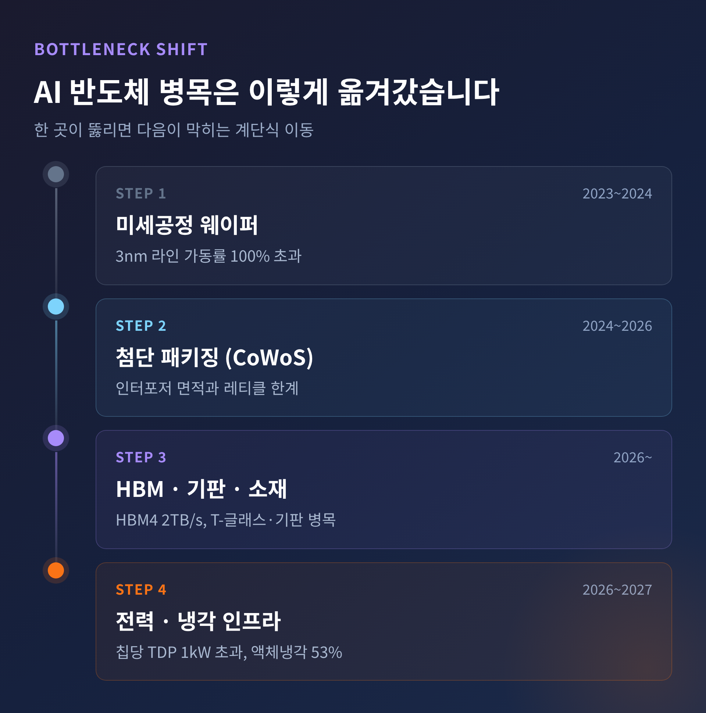
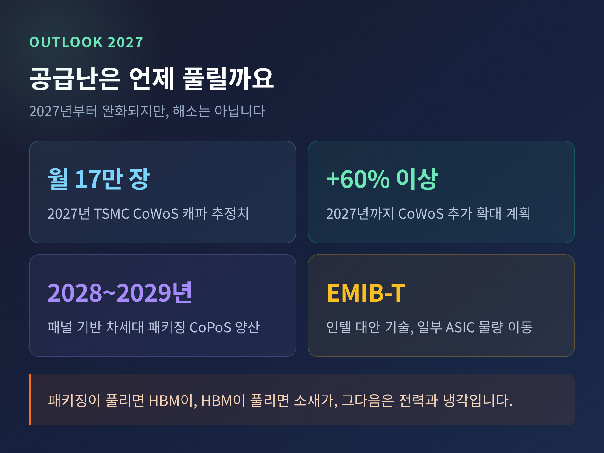

AI 반도체 병목이 첨단 패키징으로 옮겨간 이유와 TSMC 공급난 전망
3년 연속 캐파를 두 배로 늘리고도 품귀가 풀리지 않는 까닭
이번 글에서는 AI 반도체 공급난의 무게중심이 어디로 옮겨갔는지 정리해 보겠습니다. 2026년 8월 현재 모자란 것은 미세공정 웨이퍼가 아니라, 그 위에 칩과 메모리를 붙여 하나로 묶는 '첨단 패키징' 자리입니다. 숫자를 따라가며 차분히 짚어보겠습니다.

3년 연속 두 배로 늘렸습니다. 그래도 매진입니다
TSMC의 CoWoS 생산능력은 2023년 말 월 1만 3천 장 수준이었습니다. 2024년 말에는 약 3만 5천 장, 2025년 말에는 약 7만~7만 5천 장으로 늘었습니다. 그리고 2026년 말 목표치는 월 12만~14만 장입니다. 해마다 거의 두 배씩, 세 해 연속 늘려온 셈입니다.
여기에 ASE·SPIL, 앰코 같은 외주 패키징 업체(OSAT)의 신규 물량 5만~6만 장을 더하면 업계 전체 캐파는 월 20만 장에 근접합니다.
그런데도 물건이 없습니다.
C.C. 웨이 TSMC 회장 겸 CEO는 2026년 6월 4일 주주총회에서 CoWoS 캐파가 "극히 타이트하며 2026년치는 이미 매진"이라고 밝혔습니다. 7월 16일 2분기 실적 발표에서도 수급 격차가 "매우 크다"는 표현을 썼습니다. 대만 경제일보를 인용한 기관 추정에 따르면 CoWoS 수급 격차는 현재 약 20%, 2026년 말에도 약 10%가 남습니다. 좁혀지기는 하지만 사라지지는 않습니다.
참고로 TSMC의 2026년 2분기 매출은 약 402억 달러, 순이익은 전년 대비 77.4% 늘어 사상 최대였습니다. 연간 설비투자 계획도 600억~640억 달러로 올려 잡았습니다. 이 가운데 10~20%가 첨단 패키징과 테스트에 배정됩니다.

CoWoS가 무엇이고, 왜 하필 여기서 막히나
CoWoS는 'Chip on Wafer on Substrate'의 줄임말입니다. 연산을 맡는 로직 칩과 HBM 메모리 여러 개를 인터포저라는 얇은 중간 배선판 위에 나란히 얹고, 그 전체를 다시 패키지 기판에 붙이는 방식입니다. 칩과 메모리 사이 거리를 극단적으로 줄여 데이터가 오가는 통로를 넓히는 것이 목적입니다.
계열은 셋으로 나뉩니다.
CoWoS-S는 실리콘 인터포저를 씁니다. 배선이 가장 촘촘하지만, 노광 장비가 한 번에 찍어낼 수 있는 최대 면적인 레티클(약 26×33mm)의 제약을 크게 벗어나기 어렵습니다. CoWoS-R은 유기 재배선층을 써서 더 크고 싸게 만들 수 있지만 배선 미세도가 떨어집니다. CoWoS-L은 실리콘 브리지를 국소적으로 심어 두 장점을 절충한 하이브리드입니다. 엔비디아의 대형 가속기가 기대는 쪽이 바로 이 CoWoS-L입니다.
TSMC는 레티클 3.5배 크기 CoWoS-L을 2024년부터 양산했고, 현재는 5.5배 제품을 양산 중입니다. 여러 AI 고객 제품에서 수율 98% 이상, 일부는 99%까지 확보했다고 밝혔습니다. 2029년에는 레티클 14배를 넘어서고 HBM 스택 24개를 얹는 것이 목표입니다.

웨이퍼 숫자가 곧 가속기 숫자는 아닙니다
여기서 흔한 오해 하나를 짚고 넘어가겠습니다.
"월 14만 장"이라는 캐파는 인터포저를 뽑아내는 300mm 웨이퍼의 장수입니다. 완성된 AI 가속기의 개수가 아닙니다.
패키지 하나가 레티클 5.5배 면적을 차지하면, 웨이퍼 한 장에서 나오는 패키지 수는 뚝 떨어집니다. AI 칩이 커질수록 같은 웨이퍼로 만들 수 있는 제품 수는 줄어드는 구조입니다. 트렌드포스도 "AI 연산 수요가 칩 크기를 키우면서 칩 하나당 소모되는 웨이퍼·패키징 자원이 기하급수적으로 늘고 있다"고 진단했습니다.
예전에는 미세공정 한 세대를 앞당기면 성능이 따라왔습니다. 지금은 패키지를 얼마나 크게, 그리고 온전하게 붙이느냐가 성능을 가릅니다. 경쟁의 무대가 바뀐 것입니다.
부작용도 뒤따릅니다. CoWoS 웨이퍼의 평균판매단가는 7nm 웨이퍼 수준에 근접했고, ASE는 2026년 7월 첨단 패키징 견적을 20% 이상 올렸습니다. 첨단 패키징은 이제 비용 항목이 아니라 수익원입니다.
자리를 누가 가져가나 — 할당이 곧 경쟁력입니다
캐파가 모자라면 배분이 곧 순위가 됩니다.
엔비디아는 2026년 TSMC CoWoS 캐파의 절반 이상을 이미 선점한 것으로 알려졌습니다. 연간 환산 80만~85만 장 규모라는 보도가 있고, 조사기관에 따라 60%나 70%로 더 높게 잡기도 합니다. 산정 기준이 달라 수치는 갈리지만, 방향은 하나입니다. 압도적입니다.
브로드컴은 구글과 메타의 자체 칩 생산을 위해 약 24만 장을 확보한 것으로 전해집니다. AMD는 2026년 약 10만 5천 장, 전체 수요의 11% 수준으로 추정됩니다. 이 가운데 8만 장은 TSMC, 2만 5천 장은 ASE·SPIL에서 조달해 MI355·MI400 시리즈와 Venice CPU에 씁니다. 상위 세 고객사가 전체 캐파의 85% 이상을 가져간다는 집계도 있습니다.
트렌드포스의 분석이 인상적입니다. 엔비디아는 4/3nm 웨이퍼와 CoWoS는 물론 T-글래스, 기판, PCB, HBM, SSD까지 선제적으로 확보했습니다. 반면 구글처럼 수요가 강한 곳도 핵심 부품 확보가 늦어 제품 성장이 제약됐습니다. 기술이 아니라 조달이 승부를 갈랐다는 뜻입니다.

HBM이라는 또 하나의 관문
패키징 자리를 잡아도 끝이 아닙니다. 인터포저 위에 올릴 HBM이 있어야 합니다.
HBM4 표준은 2025년 4월 JEDEC가 JESD270-4로 확정했습니다. 2048비트 인터페이스에 핀당 최대 8Gb/s, 스택 하나당 총 대역폭이 최대 2TB/s에 이릅니다. 채널 수는 스택당 16개에서 32개로 두 배가 됐고, 4단부터 16단까지 쌓아 최대 64GB를 담습니다.
한국 기업 두 곳이 이 관문의 문지기입니다.
SK하이닉스는 2026년 HBM 물량을 이미 완판했습니다. HBM4는 2분기에 첫 출하했고 하반기부터 양산을 확대합니다. 4월 컨퍼런스콜에서는 "향후 3년간 수요가 캐파를 상회할 것"이라고 밝혔습니다. 삼성전자는 2026년 2월 업계 최초로 HBM4 양산 출하를 시작했고, 엔비디아 베라 루빈용 최종 검증을 통과했습니다. HBM4E 12단 샘플도 세계에서 처음 내놨습니다.
엔비디아 HBM4 물량의 벤더별 비중은 조사기관마다 다릅니다. SK하이닉스 70%·삼성전자 30%로 보는 시각이 있고, SK하이닉스 55%·삼성전자 28%·마이크론 17%로 나누는 추정도 있습니다. 어느 쪽이든 한국 두 회사가 대부분을 가져가는 구도인 것은 분명합니다.
병목은 또 옮겨갑니다. 이번엔 열입니다
가장 최근의 신호는 8월에 나왔습니다.
전자신문이 8월 20일 보도한 내용에 따르면, KAIST 김정호 교수는 시스템 반도체와 메모리가 모두 3차원 적층으로 가면서 발열이 AI 확장을 가로막는 최대 병목이 되고 있다고 경고했습니다. 서울과학기술대 김성동 교수는 AI 업계가 성능 향상보다 열 관리를 우선순위에 두기 시작했다고 진단하며, 전기 신호를 빛으로 바꿔 발열과 전력을 줄이는 CPO(광학 공동 패키징)와 시스템 전체를 함께 최적화하는 STCO를 해법으로 지목했습니다.
숫자로 보면 더 분명합니다. 엔비디아·AMD·구글의 개별 AI 칩 열설계전력(TDP)은 이미 1kW를 넘었습니다. 랙 하나가 수백 kW를 먹습니다. AI 칩의 액체냉각 채택률은 2025년 약 33%에서 2026년 53%, 2027년 60% 근처까지 올라갈 전망입니다.
삼성전자가 8월 4일 공개한 zHBM은 이 흐름 위에 있습니다. AI 가속기 바로 위에 메모리를 수직으로 쌓는 웨이퍼 본딩 기술로, HBM5 대비 메모리 밀도 10배 이상, 에너지 효율 3배, 열저항 50% 이상 감소를 내걸었습니다.

한국 반도체에 남는 숙제
병목이 후공정으로 내려왔다는 것은, 한국이 오래 약하다고 지적받아온 영역이 갑자기 무대 중앙에 섰다는 뜻이기도 합니다.
삼성전자는 아산 온양캠퍼스에 6조 원을 투입해 HBM 신규 팹을 짓습니다. 2026년 9월 착공 예정이며, 부지는 38만 9,825㎡입니다. 정부가 내건 '3대 메가 프로젝트'의 첫 삽이기도 합니다. SK하이닉스는 청주 테크노폴리스에 첨단 패키징 전용 팹 P&T7을 총 19조 원 규모로 건설 중입니다. 2026년 4월 착공했고 2027년 말 완공이 목표인데, 7월에는 7조 원 투입분의 일정을 앞당긴다고 발표했습니다. 같은 8월 20일 SK하이닉스는 CPO 로드맵도 공개하며 HBM 너머 AI 인프라로 영역을 넓히겠다고 밝혔습니다.
다만 냉정하게 볼 부분도 있습니다. 2.5D 인터포저 패키징의 주도권은 여전히 TSMC와 대만 OSAT가 쥐고 있습니다. 한국의 강점은 HBM이라는 부품이지, 그 부품을 로직 칩과 결합하는 조립 단계가 아닙니다. 소재·부품·장비 쪽에서도 기판, T-글래스, 본딩 장비처럼 병목을 만드는 품목의 상당수가 해외 의존입니다. 후공정 투자가 늘어난다고 해서 그 격차가 저절로 좁혀지지는 않습니다.
앞으로 어떻게 될까요
정리하면 이렇습니다.
트렌드포스는 2027년까지 CoWoS를 60% 이상 추가 확대하는 계획과 주문 분산에 힘입어 2.5D 패키징 공급난이 2027년부터 다소 완화될 것으로 봅니다. TSMC 자체 전망으로는 2022~2027년 CoWoS 캐파 연평균 성장률이 80%를 넘습니다. 2027년 월 캐파 추정치는 약 17만 장입니다.
동시에 대안이 자랍니다. TSMC는 사각 패널을 쓰는 차세대 패키징 CoPoS를 준비하고 있습니다. 2026년 2월 파일럿 라인 주요 장비를 반입했고, 2027년 중반 시험 생산, 2028~2029년 양산이 예상됩니다. 인텔의 EMIB-T는 수율이 크게 개선되며 일부 ASIC 물량을 가져갈 것으로 전망됩니다. 웨이 CEO도 시장에 대안이 늘어나면 오히려 TSMC의 전공정 사업에 도움이 된다고 말했습니다.
그러나 한 곳이 뚫리면 다음이 막힙니다. 패키징이 풀리면 HBM이, HBM이 풀리면 기판과 소재가, 그다음은 전력과 냉각입니다.

"AI 반도체의 경쟁은 이제 가장 좁은 통로가 어디냐를 찾는 싸움입니다."
3년 연속 두 배라는 숫자는 분명 대단합니다. 그런데도 부족하다면, 문제는 속도가 아니라 통로의 위치일 것입니다. 다음 통로가 어디일지 물으신다면, 지금으로서는 전기와 열이라고 답하겠습니다.
본 글은 공개된 보도와 조사기관 자료를 정리한 정보 제공 목적의 글이며, 특정 기업에 대한 투자 권유가 아닙니다. 언급된 수치는 조사기관·매체별 추정치로 실제와 다를 수 있습니다.